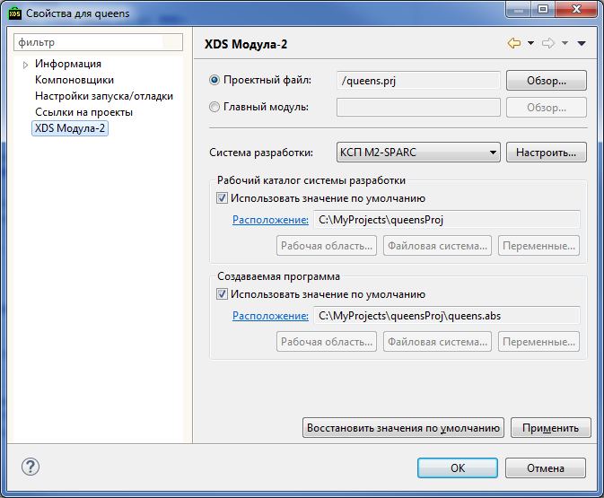

С каждым из ресурсов интегрированной среды связан набор свойств. Конкретный набор свойств зависит от типа ресурса и типа проекта к которому он принадлежит.
Просмотр и изменение свойств ресурса выполняется через диалог Свойства. Чтобы открыть его для какого-либо ресурса:
Также диалог Свойства можно открыть, использую комбинацию горячих клавиш Alt + Enter.
Свойства разбиты на группы, которые отображаются на отдельных страницах диалога. В свою очередь страницы с настройками объединены в иерархическую структуру, которая отображается в левой части диалога. В верхней части диалога находится поле ввода фильтра, который позволяет быстро найти нужную страницу свойств.
Если в главном меню выбрать Окно > Показать панель > Прочие... > Общие > Свойства, то откроется панель, которая будет отображать основные свойства ресурса, выбранного в навигационной панели.
Свойства, специфичные для Модула-2 проектов, отображаются и редактируются в диалоге Свойства на странице XDS Модула-2.

Для Модула-2 проекта можно изменить: